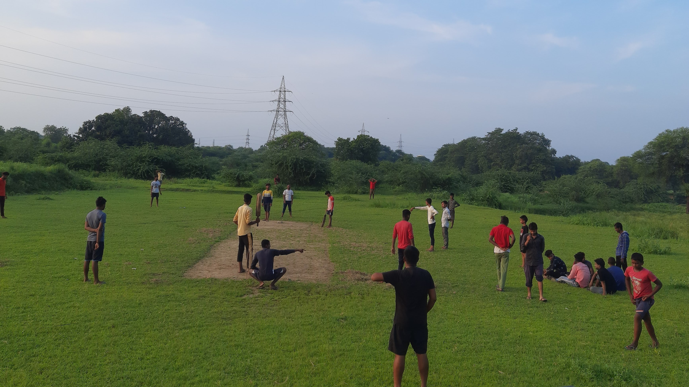
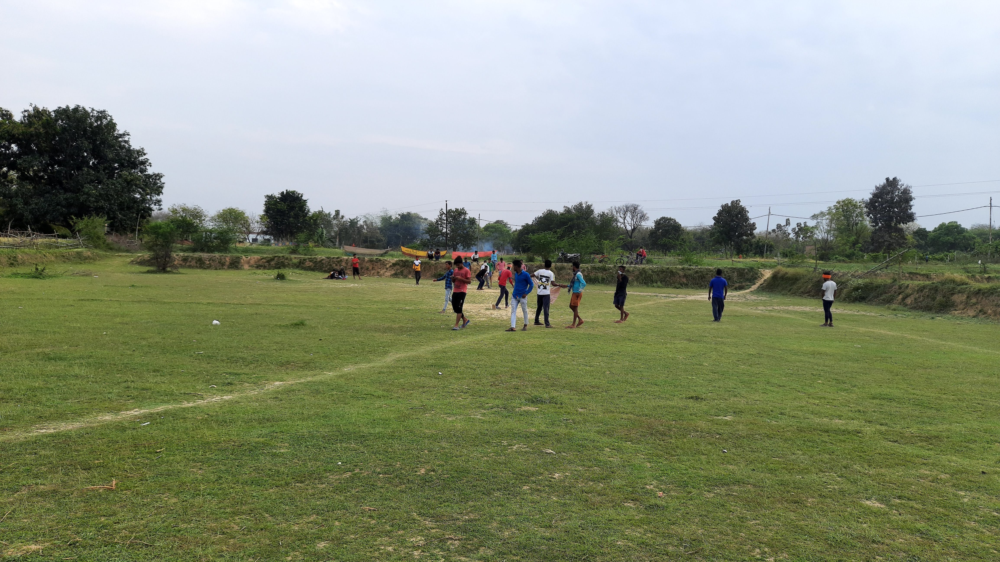

Welcome to Cricket Tournament

At Crick Hosting Online, we are dedicated to bringing the excitement and passion of cricket to the online world. Our mission is to provide a comprehensive platform that showcases all cricket teams and their players, creating a digital space where fans and teams can connect and engage.

Chennai Super Kings defeated Punjab Kings by 28 runs at the Himachal Pradesh Cricket Stadium in Dharamsala this evening. Put in to bat first, CSK posted a paltry 167 runs on the board for the loss of nine wickets.
However, Punjab could not manage to surpass the target, as the visitors sent the Punjab batters back to the pavilion at regular intervals. Punjab ended their run chase at 139 for nine in 20 overs, falling 28 runs short.

In a breathtaking, otherworldly landscape, an idyllic cricket ground emerges amidst cascading waterfalls and verdant cliffs. The scene is bathed in the warm, golden hues of a setting sun, casting long shadows across the lush, green field. The players, clad in their cricket gear, are engaged in a friendly match, seemingly dwarfed by the towering natural wonders around them. Majestic trees frame the scene, their branches stretching out towards the heavens, adding to the enchanting atmosphere. A cricket ball lies in the foreground, symbolizing the harmonious blend of sport and nature in this serene, picturesque setting. This image captures not just a moment in a game, but a tranquil escape into a fantasy realm where nature and human activity coexist in perfect harmony.

We offer
We travel to various locations to connect with tournaments that are either ongoing or in the planning stages. Our goal is to provide an online presence for these tournaments, ensuring that teams and players receive the recognition they deserve.
We aim to be the go-to platform for cricket enthusiasts, providing detailed information on teams, players, and tournaments. Whether you are a fan looking to follow your favorite team or a tournament organizer seeking to promote your event, Crick Hosting Online is here to serve your needs.

What is Dream 11
Dream11 is a popular fantasy sports platform in India that allows users to create virtual teams of real-life players for various sports, including cricket, football, basketball, kabaddi, hockey, and more. Users select players from upcoming real-world matches, and based on the actual performance of those players in the match, they earn points.

Cricket Ground
The ground in the image appears to be a large, open, grassy field. It looks well-maintained with lush green grass and a clear blue sky overhead. There are some people in the distance, suggesting that the field is being used for recreational activities. The surroundings include some trees and shrubs, adding to the natural and serene environment. Overall, the ground looks suitable for outdoor activities and gatherings.

Watching Cricket
This is the most Expensive place for watch cricket with Special facility. image depicts a different type of ground. It appears to be a dry, more barren field with patches of grass, indicating less maintenance and a rougher terrain compared to the first image. The setting is being used for a game of cricket, as evidenced by the stumps and the players. The ground seems more informal and possibly located in a rural or semi-urban area. Despite the less lush conditions, it serves as a functional space for outdoor activities and community gatherings.

2 Teams are fighting for win
In this image, a group of people are playing cricket on a dusty, open field. The ground appears to be dry and barren, with little to no grass. The players are spread out, indicating an informal, casual game of cricket. The background includes some greenery and trees, with power lines and a pylon visible, suggesting the field is in a semi-urban or rural area. Despite the rough terrain, the field serves as an active space for recreational activities, showing the community's engagement in outdoor sports.

Tournament 2021
Disqualified in fifth round by Trauma Center Team. In 2021, our cricket team faced a tough tournament and unfortunately, we were eliminated in the 5th round. The team played with great spirit, and the experience was valuable for future competitions. Despite the loss, the players gained a lot of insights and are determined to come back stronger.

Playing match at evening
Need 44 Runs in 24 balls, ively scene where people are playing cricket, with one group taking shelter under a tree.
Cricket, being a popular sport, often involves playing in open fields like the one in the second photo. It's great to see the players finding a bit of shade under the tree to rest between games or during breaks.

Flood
Flood in veruna River, from River cricket Ground, there is a narrow pathway or embankment dividing two bodies of water. The water on both sides appears calm, with vegetation and trees lining the banks. There are a few people visible on the pathway, possibly walking or observing the surroundings.
Given the title "flood" for the uploaded file, this area might be experiencing flooding or high water levels, which could explain the water on both sides of the pathway. The pathway itself appears to be slightly elevated, providing a dry route through the water-logged area.

Sunset
The image is a beautiful sunset in a rural area. The sky is a deep blue with streaks of pink and orange, and the sun is setting behind the trees. The trees are silhouetted against the sky, and there are a few houses in the distance. The image is very peaceful and serene. The colors are beautiful, and the light is soft and warm. It's a perfect example of a sunset in the countryside.
❮
❯
At Crick Hosting Online, we are dedicated to bringing the excitement and passion of cricket to the online world. Our mission is to provide a comprehensive platform that showcases all cricket teams and their players, creating a digital space where fans and teams can connect and engage.
This image beautifully illustrates the seamless blend of human activity and nature, where the passion for cricket meets the serenity of a pristine landscape. The vivid colors, dynamic composition, and enchanting details invite the viewer to immerse themselves in this idyllic scene, where the love for sport and the beauty of nature coexist in perfect harmony.
Hard ball to play match, is a close-up of a red cricket ball on a grassy field. The ball is slightly dirty and has some wear and tear, but it is still in good condition. The grass is green and lush, and there are a few blades of grass in the foreground. The background is blurred, but you can see some trees in the distance.